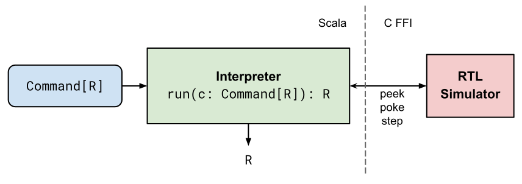
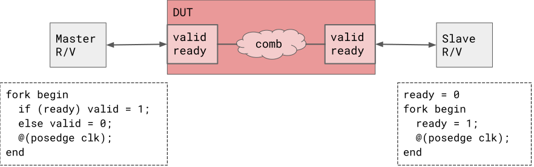

A High Performance Multi-Threaded RTL Testbench API
Vighnesh Iyer, Kevin Laeufer, Bora Nikolic
SLICE Retreat - Summer 2022
Background and Motivation
Testbench APIs
- The interface between testbench logic and a simulator backend
- Simulator backends: Verilator, Icarus, VCS
- Native Testbench APIs
- SystemVerilog
- C++ (with Verilator headers)
- General-Purpose Testbench APIs
- cocotb (Python)
- chiseltest (Scala)
Testbench API Primitives
For synchronous single-clock RTL
All APIs support concepts of poke, peek, and step
module fifo (input clk, enq_valid,
input [31:0] enq_data,
output enq_ready);
// SystemVerilog
enq_valid = 1'b1; // poke
enq_data = 'd100;
while(enq_ready != 1'b1) begin // peek
@(posedge clk); // step
end
@(posedge clk);
enq_valid = 1'b0;
# cocotb
dut.enq_valid.value = 1 # poke
dut.enq_data.value = 100
while dut.input_ready.value != 1: # peek
await RisingEdge(dut.clock) # step
await RisingEdge(dut.clock)
dut.enq_valid.value = 0
// chiseltest
dut.enq_valid.poke(1)
dut.enq_data.poke(100)
while (dut.input_ready.peek().litValue != 1) {
dut.clock.step()
}
dut.clock.step()
dut.enq_valid.poke(0)
Driving Two Interfaces Simultaneously
module example (input clk, input [31:0] a, input [31:0] b);
a.poke(1)
clk.step(4)
a.poke(2)
b.poke(100)
clk.step(2)
b.poke(200)
clk.step(4)
b.poke(300)
We want to run both code segments in parallel, synchronized on clock edges.
Manual Thread Interleaving
// Two code segments
a.poke(1)
clk.step(4)
a.poke(2)
---
b.poke(100)
clk.step(2)
b.poke(200)
clk.step(4)
b.poke(300)
// Interleaved
a.poke(1)
b.poke(100)
clk.step(2)
b.poke(200)
clk.step(2)
a.poke(2)
clk.step(2)
b.poke(300)
No reusability, prone to bugs
Thread Interleaving with SW FSMs
trait Thread {
def step(): Unit
def done(): Boolean
}
class a extends Thread {
var cycle = 0
def step() = {
if (cycle == 0)
dut.a.poke(1.U)
else if (cycle >= 4)
dut.a.poke(2.U)
cycle = cycle + 1
}
def done() = (cycle == 5)
}
val threads = Seq(a(), b())
while (!threads.all(_.done))
threads.forEach(_.step())
- Step each thread until they are all done
- Can emulate any simulation threading scenario
- Reusable
- Painful to write / debug
Fork/Join
fork/join is a universal primitive to express testbench logic parallelism
val a = fork {
a.poke(1.U)
clk.step(4)
a.poke(2.U)
}
val b = fork {
b.poke(100.U)
clk.step(2)
b.poke(200.U)
clk.step(4)
b.poke(300.U)
}
a.join
b.join
- fork spawns a simulation thread
- join blocks until the child thread is done
- Threads are synchronized on clock steps
- Once the main thread steps, all child threads are advanced until they step
Chiseltest Implementation
- Fork-ing a simulation thread, spawns a new JVM thread
- On every timestep, the chiseltest scheduler runs each thread, one at a time
- Each thread can:
- Terminate
- Peek / Poke
- Fork new threads
- Yield (step or join)
- Each thread can:
- Parking and unparking threads on a single executor is slow
Overhead of Sim Threads
DecoupledGCD testbench benchmark
| Platform | Throughput | Slowdown |
|---|---|---|
| Chiseltest with manual thread interleaving | 220 kHz | - |
| Chiseltest with fork/join threading | 7.8 kHz | 28x |
The overhead of simulation threads in chiseltest is too high.
Is there a way to bypass the JVM thread switching overhead?
Designing a New API
Specification
Desires
- Faster than existing chiseltest runtime
- Supports threading via fork/join semantics
- Nearly as user friendly as writing imperative code
Implications
- Do not spawn any JVM threads or multiplex them
- The scheduler needs to pause and resume user testbench threads
- Writing user threads should be like writing a sequence of simulation commands
A Functional Datatype
FP principle: Separate description from interpretation
sealed trait Command[R] // R is the return type of running the Command
case class Peek[I <: Data](signal: I) extends Command[I]
case class Poke[I <: Data](signal: I, value: I) extends Command[Unit]
case class Step(cycles: Int) extends Command[Unit]
- Instantiating these classes doesn’t do anything
- They only describe the actions of peeking, poking, or stepping
- An interpreter actually runs the actions
Usage Example
test(new Queue(UInt(32.W), 16)) { dut =>
val poker : Command[Unit] = Poke(dut.enq.valid, 1.B)
val stepper : Command[Unit] = Step(1)
val peeker : Command[UInt] = Peek(dut.deq.valid)
}
poker, stepper, peeker don't do anything
How can we use the value of a previous command in a subsequent one?
Command Continuations
case class Return[R](retval: R) extends Command[R]
case class Cont[R1, R2](c: Command[R1], then: R1 => Command[R2]) extends Command[R2]
def flatMap[R1, R2](c: Command[R1], f: R1 => Command[R2]): Command[R2] = {
c match {
case Return(retval) => f(retval)
case cmd: Command[R1] => Cont(cmd, f)
}
}
Now, we can describe executing a command after another
A Sequence of Commands
val program: Command[Boolean] =
Poke(dut.enq.valid, 1.B).flatMap {
_ => Step(1).flatMap {
_ => Peek(dut.deq.valid).map {
p => p.litValue == 1
}
}
}
Scala For-Comprehension Sugar
val program: Command[Boolean] =
Poke(dut.enq.valid, 1.B).flatMap {
_ => Step(1).flatMap {
_ => Peek(dut.deq.valid).map {
p => p.litValue == 1
}
}
}
val program: Command[Boolean] = for {
_ <- Poke(dut.enq.valid, 1.B)
_ <- Step(1)
p <- Peek(dut.deq.valid)
} yield p.litValue == 1
Now, we can describe sequential programs that look like imperative code
A Recursive Interpreter
def run(c: Command[R], clock: Clock): R = {
c match {
Peek(signal) => signal.peek() // same for poke, step
Return(retval) => retval
Cont(c1, c2) =>
val r = run(c1, clock)
run(c2(r), clock)
}
}
test(new Queue(UInt(32.W), 16)) { dut =>
val allGood = run(program, dut.clock)
assert(allGood)
}
Command Interpretation
The interpreter has full control of a thread
A 'thread' is just a pointer to a Command
Command Combinators
Commands are values → can be manipulated by ordinary functions
// Repeats a command n times
def repeat(cmd: Command[_], n: Int): Command[Unit]
// Run a list of programs sequentially
def concat[R](cmds: Seq[Command[R]]): Command[Unit]
// Run a list of programs and aggregate their results
def sequence[R](cmds: Seq[Command[R]]): Command[Seq[R]]
Looping Commands
Library of stack-safe functions that emulate imperative loops
// Run this program until it returns false
def doWhile(cmd: Command[Boolean]): Command[Unit]
// Run this program continuously
def forever(cmd: Command[_]): Command[Nothing]
// Step the clock until the signal == value
def waitUntil[I <: Data](signal: I, value: I): Command[Unit]
UART TX Example
def sendBit(bit: Int): Command[Unit] = {
for {
_ <- poke(uartIn, bit.B)
_ <- step(cyclesPerBit)
} yield ()
}
def sendByte(byte: Int): Command[Unit] = {
for {
_ <- sendBit(0)
_ <- concat((0 until 8).map(i => sendBit((byte >> i) & 0x1)))
_ <- sendBit(1)
} yield ()
}
For-loops → list of function invocations
Ready-Valid Example
def enqueue(data: T): Command[Unit] = for {
_ <- poke(io.bits, data)
_ <- poke(io.valid, true.B)
_ <- waitUntil(io.ready, true.B)
_ <- step(1)
_ <- poke(io.valid, false.B)
} yield ()
Equivalent functionality to imperative implementation
Simulation Threading and Scheduling
Fork/Join
val queueTest: Command[Boolean] = for {
enqThread <- fork(enqueue(100.U))
deqThread <- fork(dequeue())
_ <- join(enqThread)
data <- join(deqThread)
} yield data.litValue == 100
Interpreter / Scheduler
- On each timestep
- Run every thread until a step, join, or return
- Collect any new threads spawned
- Repeat until a fixpoint is reached
- Step the clock
- Repeat until the main thread returns
Results
Performance Benchmarks
| Platform | DecoupledGCD | NeuromorphicProcessor | ||
|---|---|---|---|---|
| SystemVerilog + commercial simulator | 0.40 s | 412 kHz | 0:30 min | 1782 kHz |
| Chiseltest with manual thread interleaving | 0.75 s | 220 kHz | 2:03 min | 432 kHz |
| Chiseltest with Command API | 2.4 s | 67 kHz | 5:23 min | 165 kHz |
| Chiseltest with fork/join threading | 21 s | 7.8 kHz | 27:21 min | 32.6 kHz |
| cocotb | 43.2 s | 3.8 kHz | 89:38 min | 9.9 kHz |
Conclusion
Encoding simulation commands as values enables a fast runtime using only 1 thread.
Fastest general-purpose testbench API with simulation threading support.
Coming up:
- Channels for inter-thread communication
- Better debug (macros, prints)
- TileLink VIPs
- Perf parity with SystemVerilog
Discussion
Better Benchmarks?
Requirements:
- Simple (but large), single-clock blob of Verilog RTL
- Simple top-level IOs for VIP implementation
- Simple checker
- Long running test with simple stimulus generation
Ideas: BaseTile (Rocket/BOOM), NoC
Also: measure # threads vs throughput
How to Improve Performance?
- Imperative interpreter with internal mutable state
- FFI overhead to Verilator .so using JNI vs JNA
- Skip through cycles of no IO activity
Q: what is the overhead of UVM over baseline SV?
Q: when profiling a typical block-level simulation, where is time spent?
Attaching Verification Collateral
- Top-level monitors
- Internal bus monitors (TileLink, Decoupled, Irrevocable)
- Golden models
Q: how are internal bus monitors usually implemented?
(RTL, SV models with binds) (separate read-only thread?)
How to Handle Race Conditions
Same Port Races
def enqueue(data: T) = for {
_ <- poke(io.bits, data)
_ <- poke(io.valid, true.B)
_ <- waitUntil(io.ready, true.B)
_ <- step(1)
_ <- poke(io.valid, false.B)
} yield ()
def dequeue() = for {
_ <- waitForValue(io.valid, true.B)
_ <- poke(io.ready, true.B)
value <- peek(io.bits)
_ <- step(1)
} yield value
When both of these are used on a single port to drive and monitor, there is a race
SV resolves this using blocking vs non-blocking assigns and reads
Q: is having a 'monitor' region the right approach?
Schedulers
- Active region: Execute all blocking and continuous assignments
- NBA region: Execute all non-blocking assignments (FF + testbench code)
- Observed region: Evaluate concurrent assertions
- Reactive region: Evaluate program blocks
Q: Is this complexity necessary? Can it be generalized?
How to Handle Race Conditions
Comb Loop Races
Thread order determines behavior - unspecified in SystemVerilog
How often does this occur in practice? How is it resolved?
DUT Interaction Methods
RTL Transactors vs C++ cycle-by-cycle drivers vs SV VIPs
- Q: When are each of them used?
- Q: What are the limitations of transactors?
- Q: Is there a unified way to design them?
- Q: Are the transactions portable?
Hardware Modeling
Can the same constructs used for testbenches be used for hardware modeling?
SystemC uses modules, channels / ports, events, and processes
- Q: Is SystemC often used as testbench top vs SystemVerilog?
- Q: What are the benefits for unifying hardware modeling and testbench code?
- Q: Can a subset of SystemC code be turned into a formal transaction-level model?